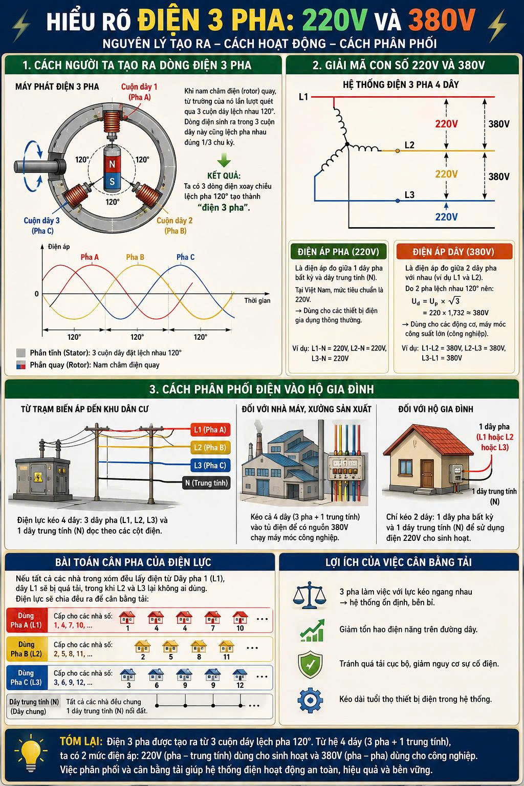

Dòng điện xoay chiều được tạo ra dựa trên hiện tượng cảm ứng điện từ: khi một nam châm quay gần một cuộn dây đồng, nó sẽ sinh ra dòng điện trong cuộn dây đó.
Để tạo ra điện 3 pha, người ta chế tạo một máy phát điện có cấu tạo đặc biệt:

Khi nam châm ở giữa quay, từ trường của nó sẽ lần lượt quét qua 3 cuộn dây. Vì 3 cuộn dây đặt lệch nhau 120 độ, nên dòng điện sinh ra trong 3 cuộn dây này cũng không đạt đỉnh cùng một lúc mà "lệch pha" nhau đúng 1/3 chu kỳ. Kết quả là chúng ta có 3 dòng điện xoay chiều chạy trên 3 sợi dây độc lập, tạo thành "điện 3 pha".
Hệ thống điện lưới truyền tải về khu dân cư thường sử dụng cấu hình 4 dây, bao gồm 3 dây pha (nóng) L1, L2, L3 và 1 dây trung tính (nguội) N.
Điện 380V rất khỏe, tạo ra từ trường quay đều đặn nên được dùng để chạy các động cơ công suất lớn trong công nghiệp.
Từ trạm biến áp của khu phố, điện lực sẽ kéo cả 4 sợi dây chạy dọc theo các cột điện ngoài đường.
Bài toán cân bằng tải:
Để tránh việc một dây pha bị quá tải (ví dụ ai cũng đấu vào dây L1), điện lực sẽ chia đều các hộ gia đình ra 3 dây. Ví dụ: Nhà số 1 đấu L1, nhà số 2 đấu L2, nhà số 3 đấu L3... Điều này giúp 3 cuộn dây ngoài trạm biến áp làm việc với lực kéo ngang nhau, giúp hệ thống bền bỉ và ổn định.